第05讲 探究与表达规律

课程标准 | 学习目标 |
①掌握规律探索的方法 ②掌握从特殊到一般、从个体到整体地观察 | 1．初步掌握规律探索的方法，并能对简单的规律进行用数学语言描述； 2．培养学生对数和字母应用的理解，从而拓展学生的视野； 3．掌握从特殊到一般、从个体到整体地观察。分析问题的方法，尝试从不同角度探究问题， 培养应用意识和创新意识。 |
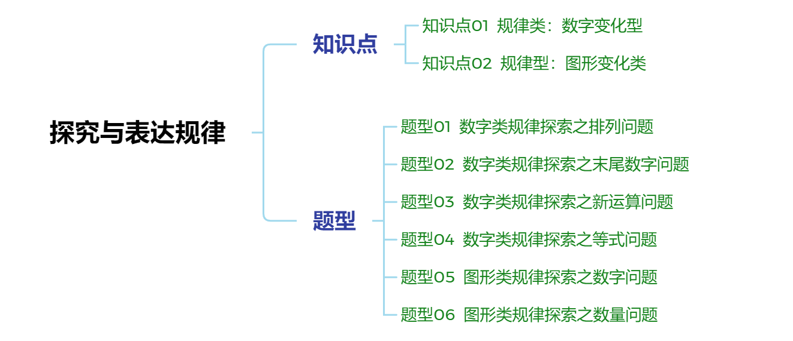

知识点01 规律类：数字变化型
一、等差规律：前后两项差几写成几×n，令 n=1，在通过加减来凑第一个数。
例如：上面的第（3）列数，相差 3，则先得到 3n，而第 1 项是 4，当 n=1 时，
3n=3，3+1=4，所有第n项表示为 3n+1.
拓展延申：
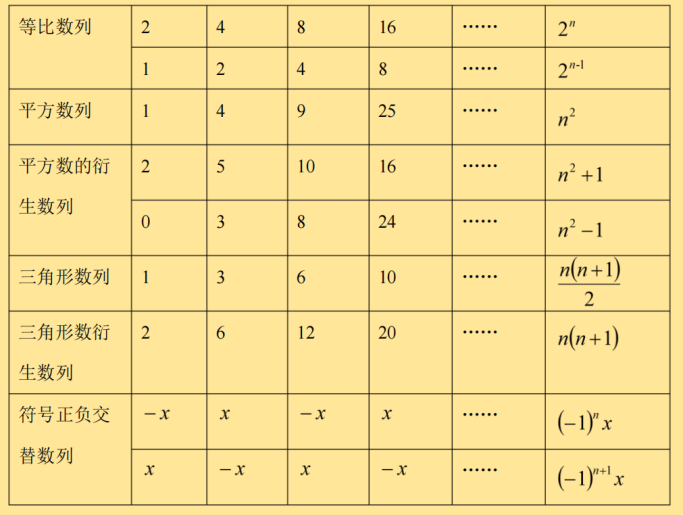
【即学即练1】
1．（23-24七年级下·江苏常州·期中）“一尺之锤，日取其半，万世不竭．”在如图的三角形中，一条中线将一个三角形分为面积相等的两部分，在此基础上再作一条中线，可得到原三角形一半面积的一半，即 ，已知
，已知 ，根据这个几何图形的规律求得
，根据这个几何图形的规律求得 …
… 的值为（ ）
的值为（ ）
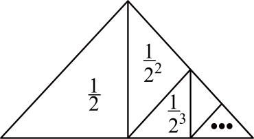
A．1 B． C．
C．
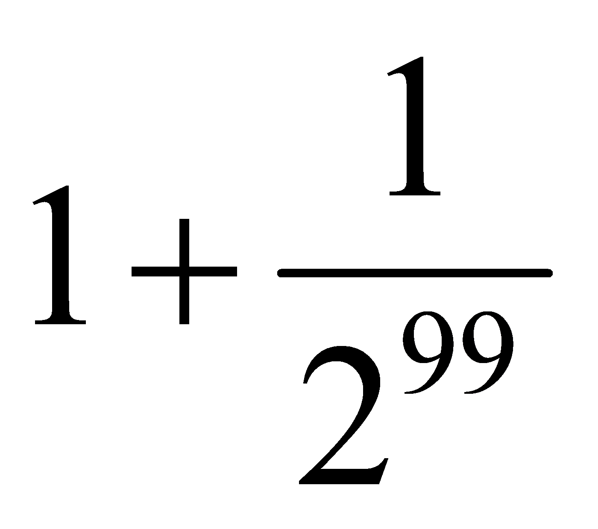
D．
2．（23-24九年级下·广东茂名·期末）观察下列等式： ，
， ，
， ，
， ，
， ，
， ，
， ，
，
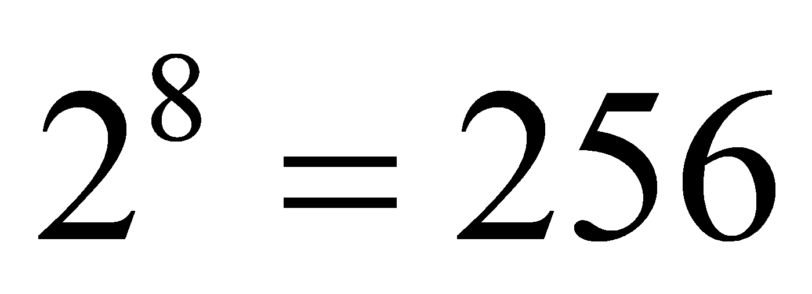
， ．回答下面问题：
．回答下面问题：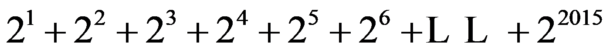
的末位数字是 ．知识点02 规律型：图形变化类
1.基本思想：图形规律 数字规律
2.基本方法：
（1）从具体的实际问题出发,观察各个数量的特点及相互之间的变化规律.
（2）由此及彼,合理联想,大胆猜想
（3）善于类比,从不同事物中发现相似或相同点；
（4）总结规律,得出结论,并验证结论正确与否;
【即学即练2】
1．（2024·安徽池州·三模）化学中把仅有碳和氢两种元素组成的有机化合物称为碳氢化合物，又叫烃，如图，这是部分碳氢化合物的结构式，第1个结构式中有1个C和4个H，分子式是 ；第2个结构式中有2个C和6个H，分子式是
；第2个结构式中有2个C和6个H，分子式是 ；第3个结构式中有3个C和8个H，分子式是
；第3个结构式中有3个C和8个H，分子式是 …按照此规律，回答下列问题．
…按照此规律，回答下列问题．
(1)第6个结构式的分子式是________；
(2)第n个结构式的分子式是________；
(3)试通过计算说明分子式
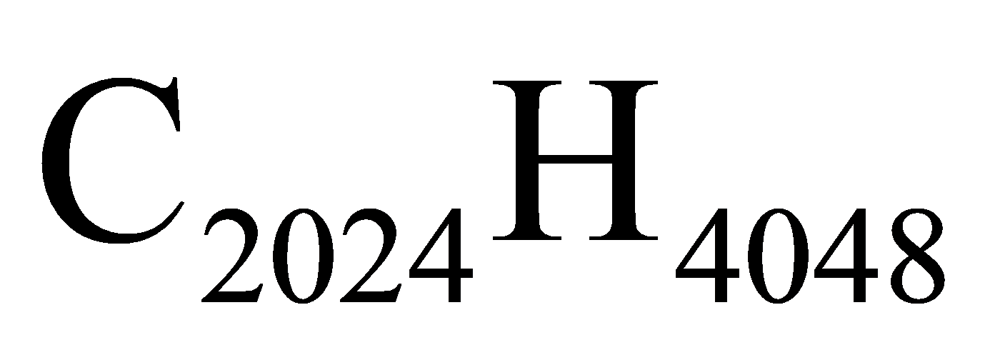
的化合物是否属于上述的碳氢化合物．2．（2024·安徽马鞍山·二模）【观察思考】
用同样大小的圆形棋子按如图所示的规律摆放：第1个图形中有6个棋子，第2个图形中有9个棋子，第3个图形中有12个棋子，第4个图形中有15个棋子，以此类推．

【规律发现】
（1）第6个图形中有____________个圆形棋子；
（2）第n个图形中有____________个圆形棋子；（用含n的代数式表示）
【规律应用】
（3）将2024个圆形棋子按照题中的规律一次性摆放，且棋子全部用完．若能摆放，是第几个图形？若不能，请说明理由．
题型01 数字类规律探索之排列问题
【典例1】（24-25七年级上·江苏苏州·阶段练习）按一定规律排成的一列数： ，
， ，
， ，
， ，
，
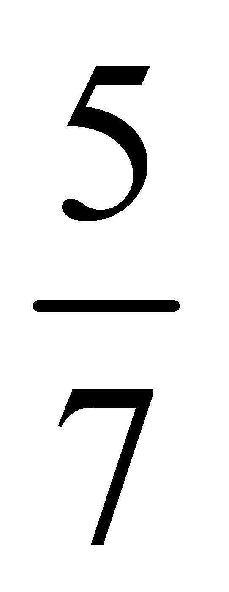
， ，
， ，则这列数中的第2016个数是 ．
，则这列数中的第2016个数是 ．【变式1】（24-25七年级上·湖北武汉·阶段练习）一组数据， ，
， ，
， ，
， ，
， 按这种规律得第十个数为
按这种规律得第十个数为
【变式2】（23-24九年级上·内蒙古兴安盟·阶段练习）一组数： ，
，
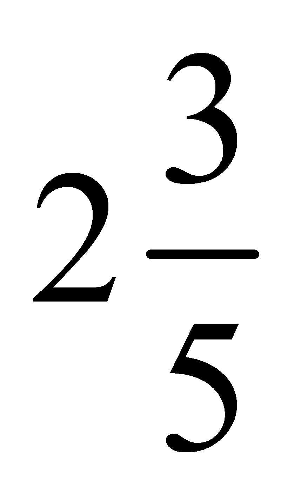
，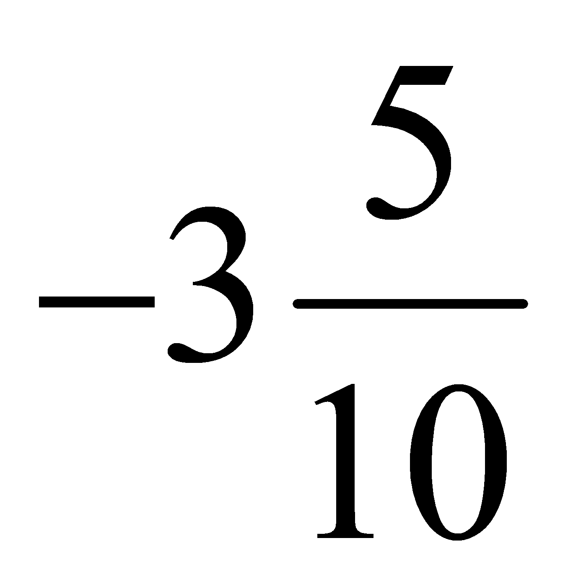
， ，
，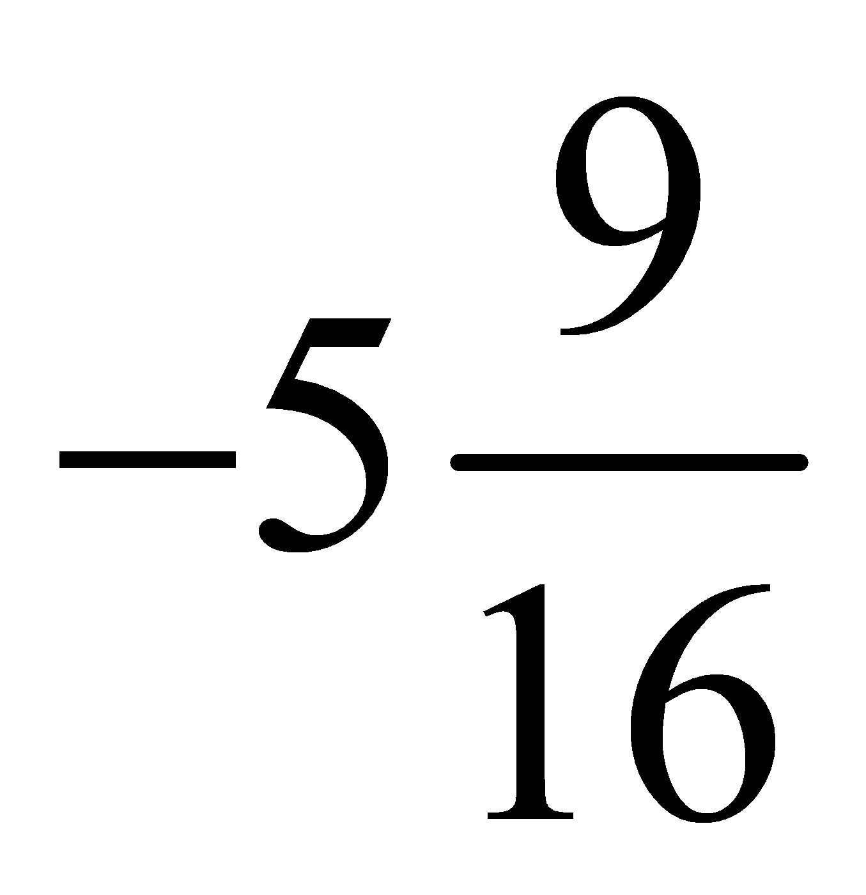
，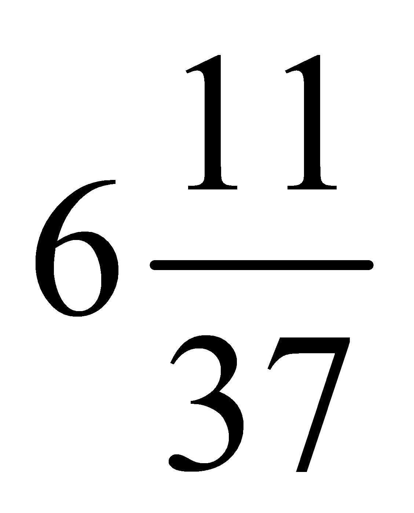
，…，根据这个规律，第n个数是 （n为正整数）．（用含n的代数式表示）【变式3】（23-24七年级下·河北石家庄·开学考试）仔细观察，思考下面 一列数有哪些规律： ，2，
，2， ，8，
，8， ，32，…，然后填空：
，32，…，然后填空：
（1）第7个数是 ，（2）第2012个数是 ，（3）第n个数是 ．
题型02 数字类规律探索之末尾数字问题
【典例2】（2023·江苏镇江·模拟预测）已知 ，
，
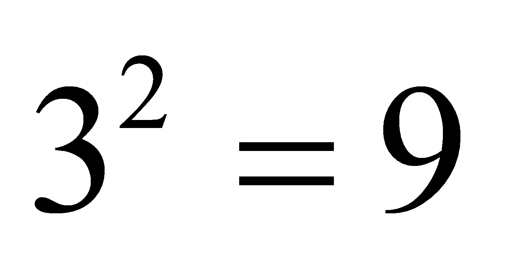
， ，
，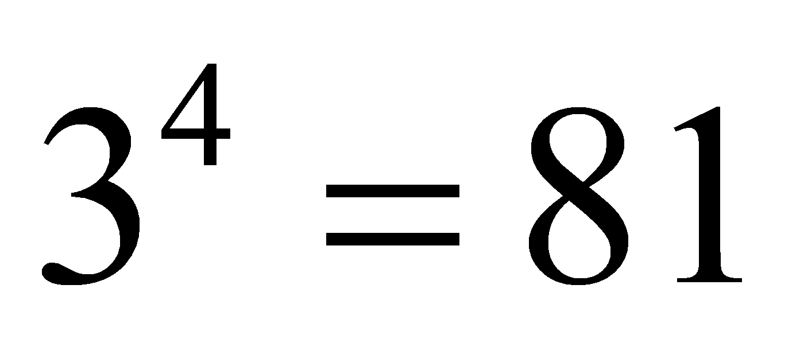
， ，
， ，，推测
，，推测 的个位数字是 ．
的个位数字是 ．【变式1】（22-23七年级上·河南洛阳·阶段练习）观察等式： ，
， ，
， ，
， ，，，，
，，，， ．通过观察，用你发现的规律确定
．通过观察，用你发现的规律确定 的个位数字是 ．
的个位数字是 ．
【变式2】（23-24七年级下·湖南岳阳·阶段练习）已知
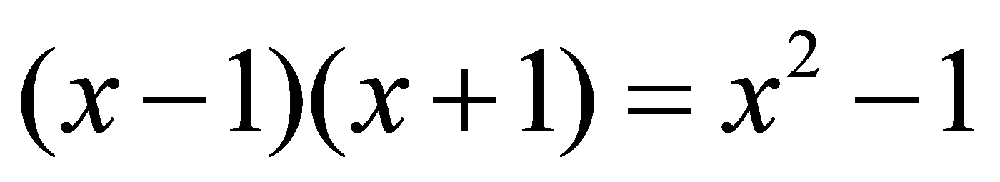
，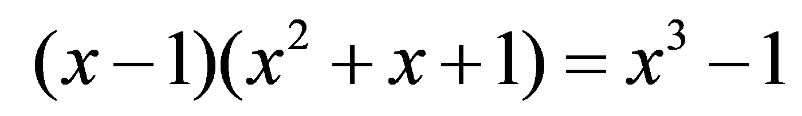
， ， 根据前面各式的规律，可得：
， 根据前面各式的规律，可得：（1）  ( )；
( )；
（2）
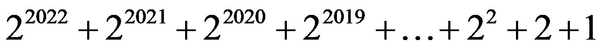
的值的个位数字是 ．题型03 数字类规律探索之新运算问题
【典例3】（24-25七年级上·四川成都·开学考试）已知有一个新算符“ ”，使下列算式
”，使下列算式 ，
， ，
， ，那么
，那么 ．
．
【变式1】（23-24七年级上·广西桂林·期中）定义一种对正整数n的“F运算”：①当n为奇数时，结果为
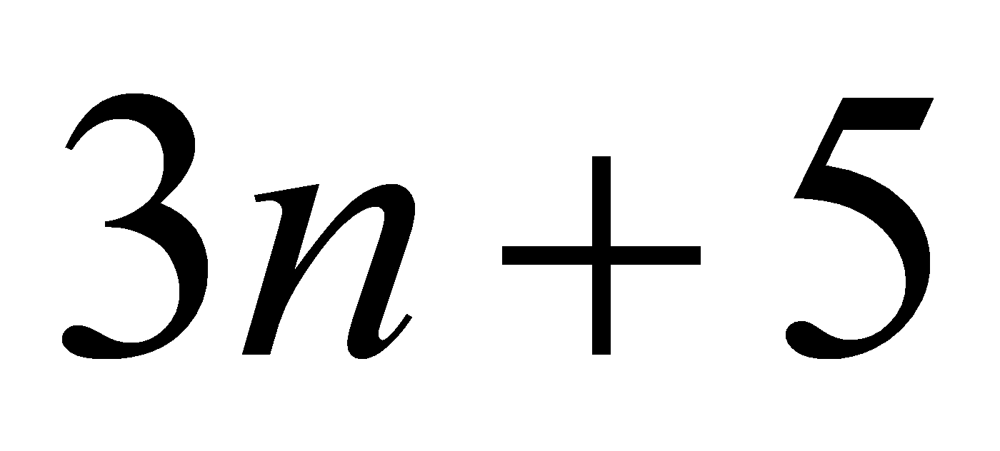
；②当n为偶数时，结果为 （其中k是使为奇数的正整数），并且运算可以重复进行，例如，取
（其中k是使为奇数的正整数），并且运算可以重复进行，例如，取 ，则：
，则：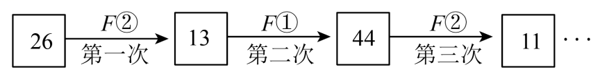
若 ，则第2024次“F运算”的结果是 ．
，则第2024次“F运算”的结果是 ．
【变式2】（23-24八年级上·湖南岳阳·开学考试）定义：a是不为1的有理数，我们把
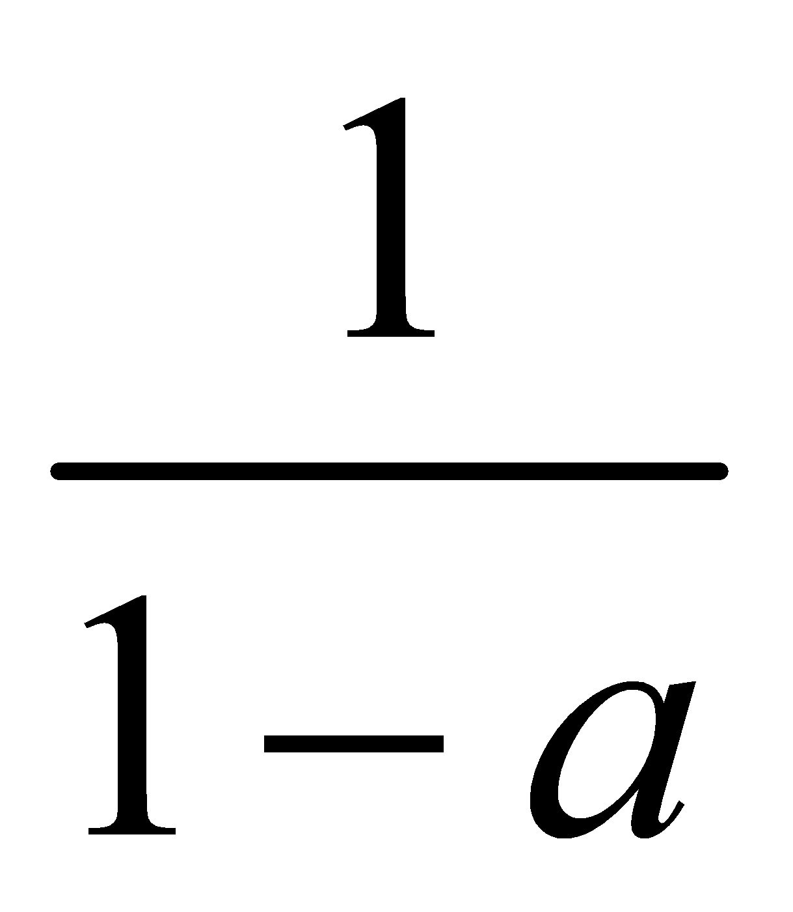
称为a的差倒数，如：2的差倒数是 ，的差倒数是
，的差倒数是 ．已知
．已知 ，
， 是
是 的差倒数，
的差倒数， 是的差倒数，
是的差倒数， 是的差倒数，…，依此类推，计算：
是的差倒数，…，依此类推，计算： ．
．题型04 数字类规律探索之等式问题
【典例4】（24-25七年级上·陕西西安·阶段练习）已知，
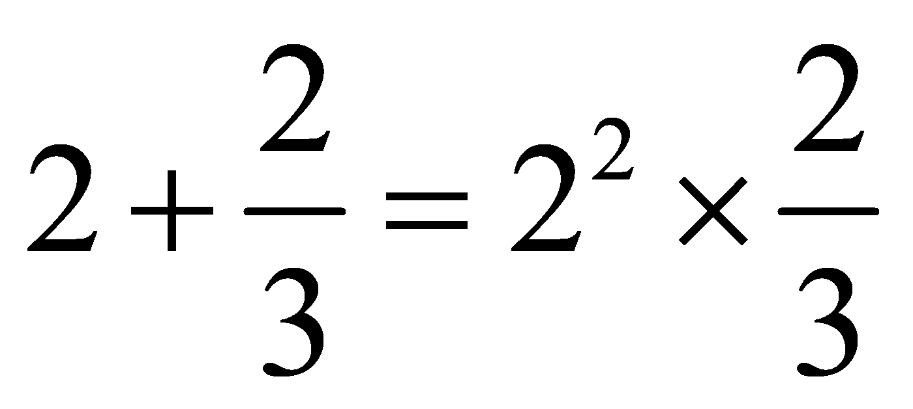
， ，
， ，
， ，…，若
，…，若 符合前面式子的规律，则
符合前面式子的规律，则 ．
．【变式1】（24-25八年级上·河北邯郸·开学考试）观察下面的等式：第1个等式：
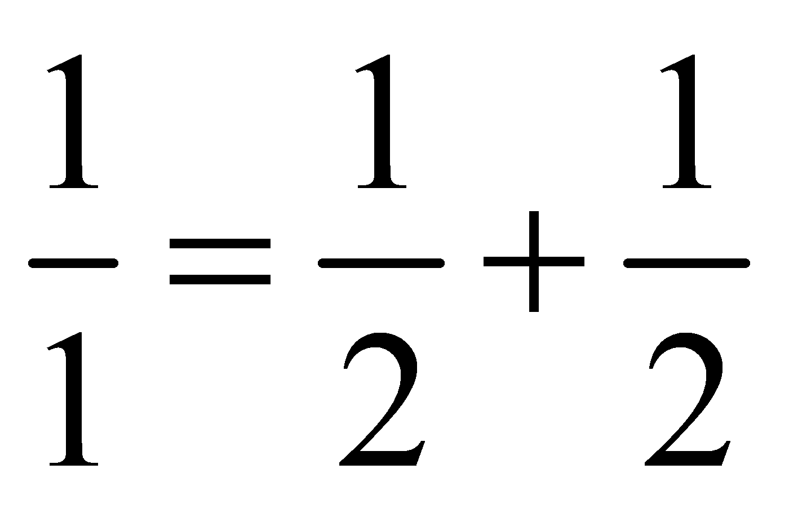
；第2个等式： ；第3个等式：
；第3个等式： ；第4个等式：
；第4个等式： ；……
；……（1）写出第5个等式： ；
；
（2）写出第n个等式： （用含n的式子表示）．
【变式2】（2024·安徽六安·模拟预测）观察下列等式：
第1个等式：
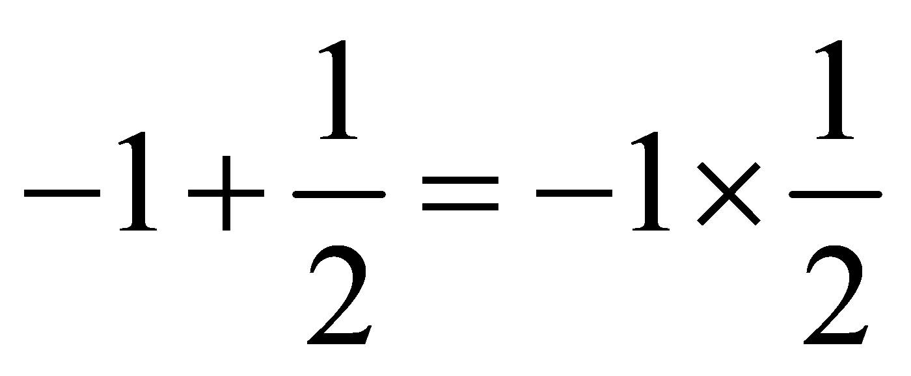
；第2个等式： ；
；
第3个等式： ；．
；．
…．
(1)请写出第5个等式：______；
(2)写出第 个等式：______；（用含n的式子表示，n为正整数）
个等式：______；（用含n的式子表示，n为正整数）
(3)根据你发现的规律计算： ．
．
题型05 图形类规律探索之数字问题
【典例5】（2024·湖南·二模）下面每个表格中的四个数都是按相同规律填写的．

根据此规律确定a的值为 ，b的值为 ，x的值为 ．
【变式1】（23-24七年级下·全国·单元测试）某城市大剧院地面的一部分为扇形，观众席的座位按如下表方式设置，则第五排、第六排分别有 个座位；第n排有 个座位．
排数 | 1 | 2 | 3 | 4 | … |
座位数 | 50 | 53 | 56 | 59 | … |
【变式2】（23-24七年级上·安徽·期末）探索规律：
在数学探究课上，小明将一张面积为1的正方形纸片进行分割，如图所示：
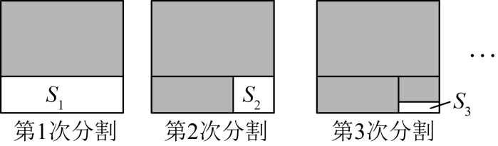
第1次分割，将此正方形的纸片三等分，其中空白部分的面积记为 ；
；
第2次分割，将第1次分割图中空白部分的纸片继续三等分，其中空白部分的面积记为 ；
；
第3次分割，将第2次分割图中空白部分的纸片继续三等分，其中空白部分的面积记为
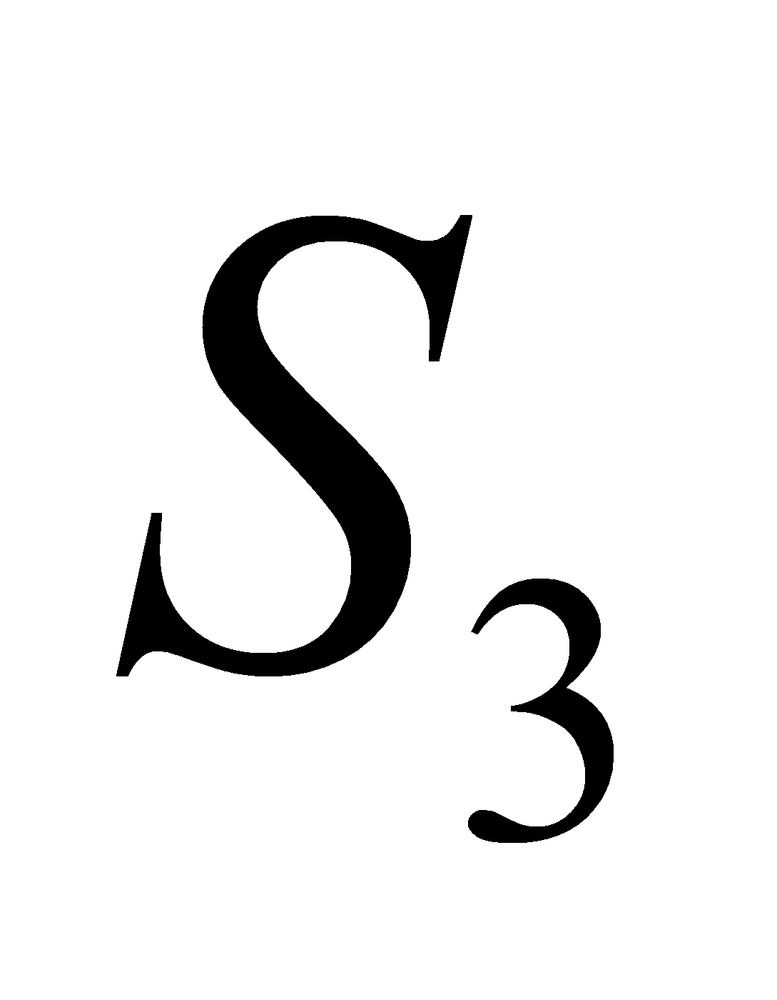
；……
根据以上规律，完成下列问题：
(1)尝试：第4次分割后， ______
______
(2)初步应用：根据规律，求 的值．
的值．
(3)拓展应用：利用以上规律，求 的值．
的值．
题型06 图形类规律探索之数量问题
【典例6】（24-25七年级上·江苏连云港·阶段练习）下列是用火柴棒拼出的一列图形．
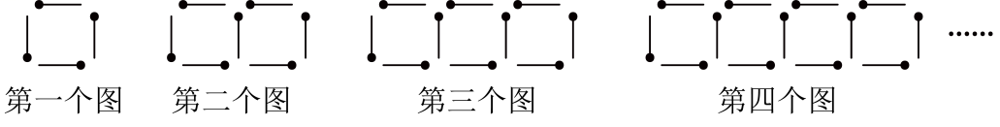
仔细观察，找出规律，解答下列各题：
(1)第6个图中共有______根火柴；
(2)第n个图形中共有__________根火柴；（用含n的式子表示）
(3)第2021个图形中共有多少根火柴？
【变式1】（23-24七年级上·安徽·单元测试）观察下列图形中点的个数．
(1)图2中点的个数是 ；
(2)若按其规律再画下去，如果图形中有36个点，那它是第 个图形；
(3)若按其规律再画下去，可以得到第n个图形中所有点的个数为 （用含n的代数式表示）．
【变式2】（24-25七年级上·全国·单元测试）将一张等边三角形纸片剪成四个大小、形状一样的小等边三角形（如图所示），记为第一次操作，然后将其中右下角的等边三角形又按同样的方法剪成四小片，记为第二次操作，若每次都把右下角的等边三角形按此方法剪成四小片，如此循环进行下去．
(1)如果剪n次共能得到 个等边三角形．
(2)若原等边三角形的边长为1，设
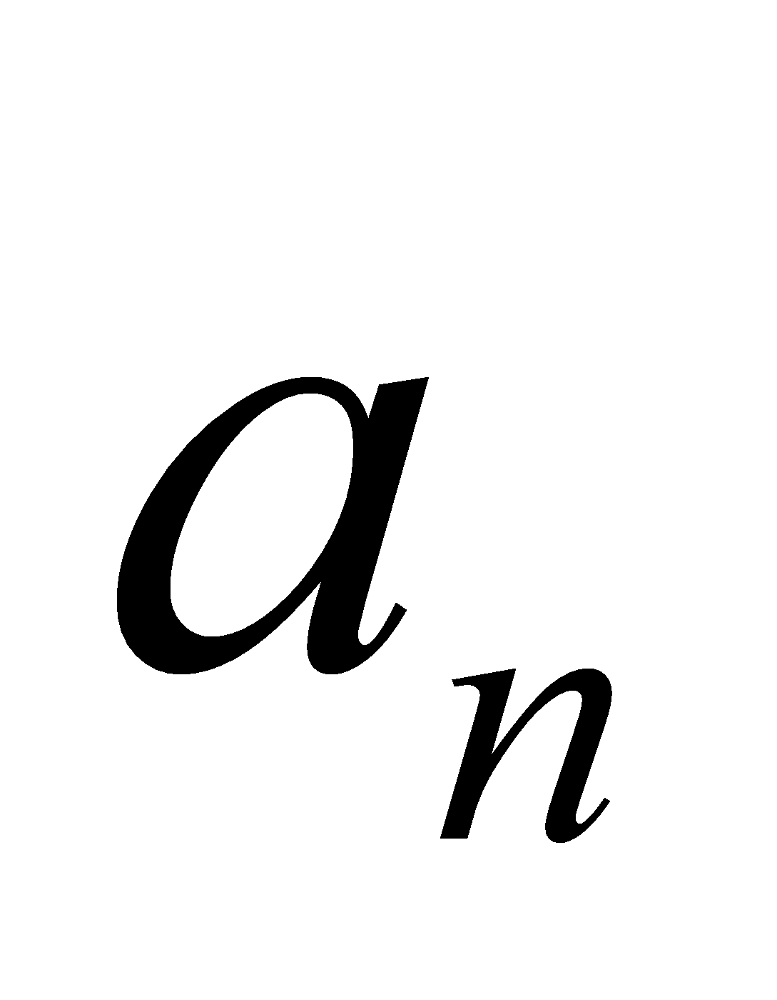
表示第n次所剪出的小等边三角形的边长，如 ．
．①试用含的式子表示 ；
；
②计算 ．
．
【变式3】（23-24七年级上·四川达州·期末）用三角形和六边形按如图所示的规律拼图案．

(1)第4个图案中，三角形的个数有 个，六边形的个数有 个；
(2)第n（n为正整数）个图案中，三角形的个数与六边形的个数各有多少个？
(3)第2024个图案中，三角形的个数与六边形的个数各有多少个？
(4)是否存在某个符合上述规律的图案，其中有100个三角形与30个六边形？如果有，指出是第几个图案；如果没有，说明理由．
一、单选题
1．（2024九年级下·云南·学业考试）按一定规律排列的多项式： ，
，
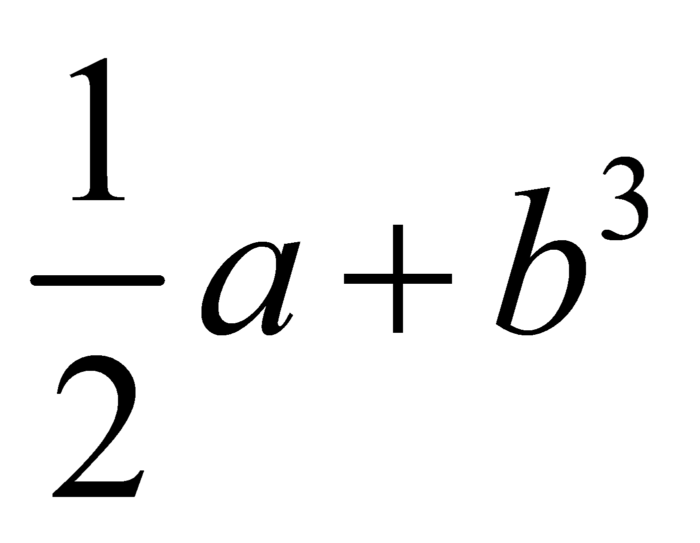
，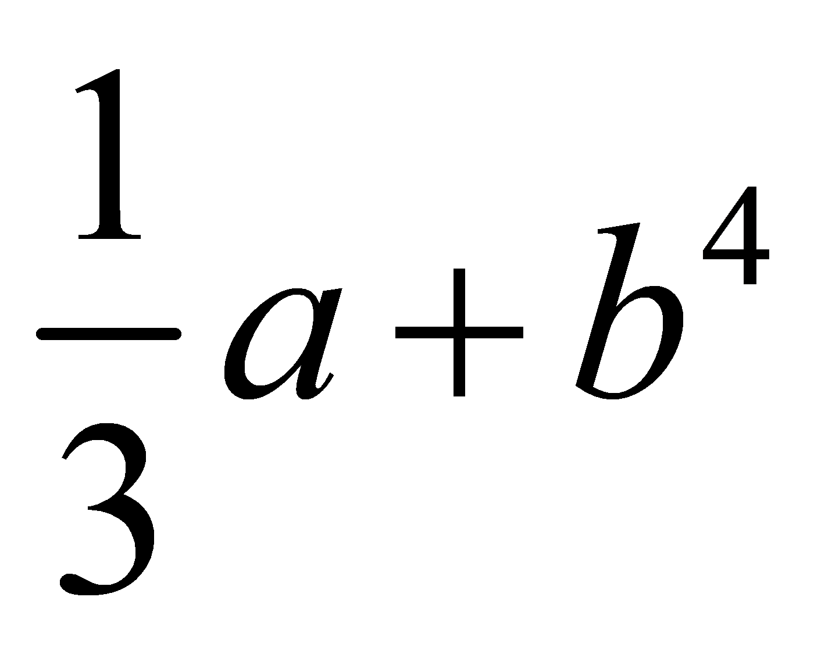
，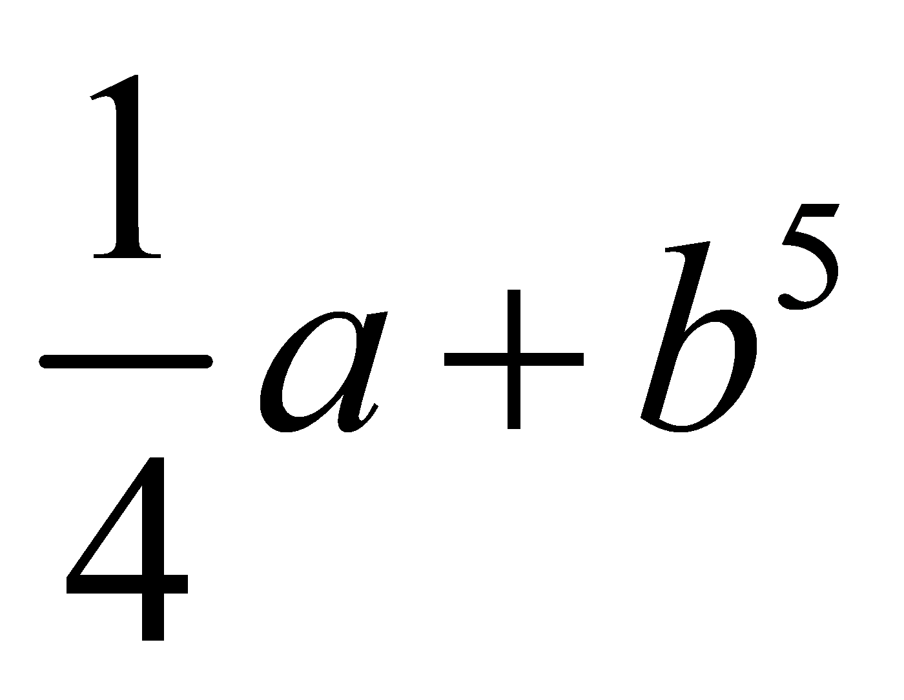
， ，…，第
，…，第 个多项式是（ ）
个多项式是（ ）A． B．
B． C．
C． D．
D．
2．（23-24七年级上·江苏盐城·阶段练习）为了便于管理，毓龙路实验学校决定给每个学生编号，末尾用1表示男生，用2表示女生．例如：编号201901232表示2019年入学的1班23号学生，是位女生．那么2023年入学的10班3号男学生的编号为（ ）
A．202310301 B．202301032 C．202310031 D．202310032
3．（23-24七年级上·广西桂林·期中）观察下面三行数：
 ，9，
，9， ，81……①
，81……①
1，，9，……②
 ，10，
，10， ，82……③
，82……③
设x，y，z分别为第①②③行的202个数，则 的值为（ ）
的值为（ ）
A．1 B． C．
C． D．
D．
4．（23-24七年级上·江苏盐城·阶段练习）利用如图1的二维码可以进行身份识别．我校建立了一个身份识别系统，图2是某个学生的识别图案，黑色小正方形表示1，白色小正方形表示0，将第一行数字从左到右依次记为a，b，c，d，那么可以转换为该生所在班级序号，其序号为 ，如图2第一行数字从左到右依次为0，1，0，1，序号为
，如图2第一行数字从左到右依次为0，1，0，1，序号为
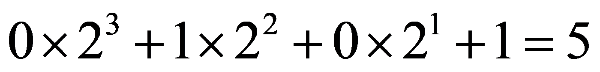
，表示该生为5班学生．表示6班学生的识别图案是（ ）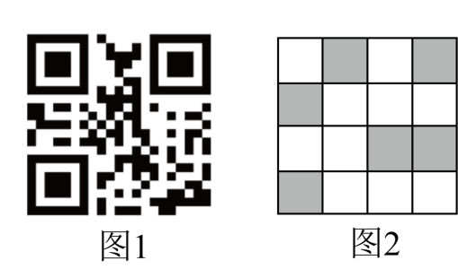
A．
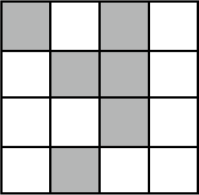
B．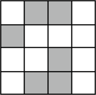
C．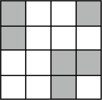
D．
二、填空题
5．（23-24九年级下·广东茂名·期末）观察下列等式： ，
， ，，，，，，，
，，，，，，， ．回答下面问题：
．回答下面问题： 的末位数字是 ．
的末位数字是 ．
6．（2024·湖南长沙·模拟预测）已知一组有理数a，b，我们将左边的数减去右边相邻的数即 的值插入到a，b之间称之为一次“差数操作”．若
的值插入到a，b之间称之为一次“差数操作”．若 ，
， ，第一次“差数操作”得2，5，；第二次“差数操作”得2，，5，8，；则第2024次“差数操作”所得数的和是 ．
，第一次“差数操作”得2，5，；第二次“差数操作”得2，，5，8，；则第2024次“差数操作”所得数的和是 ．
7．（2024·湖南娄底·模拟预测）一个自然数的立方，可以分裂成若干个连续奇数的和，例如：
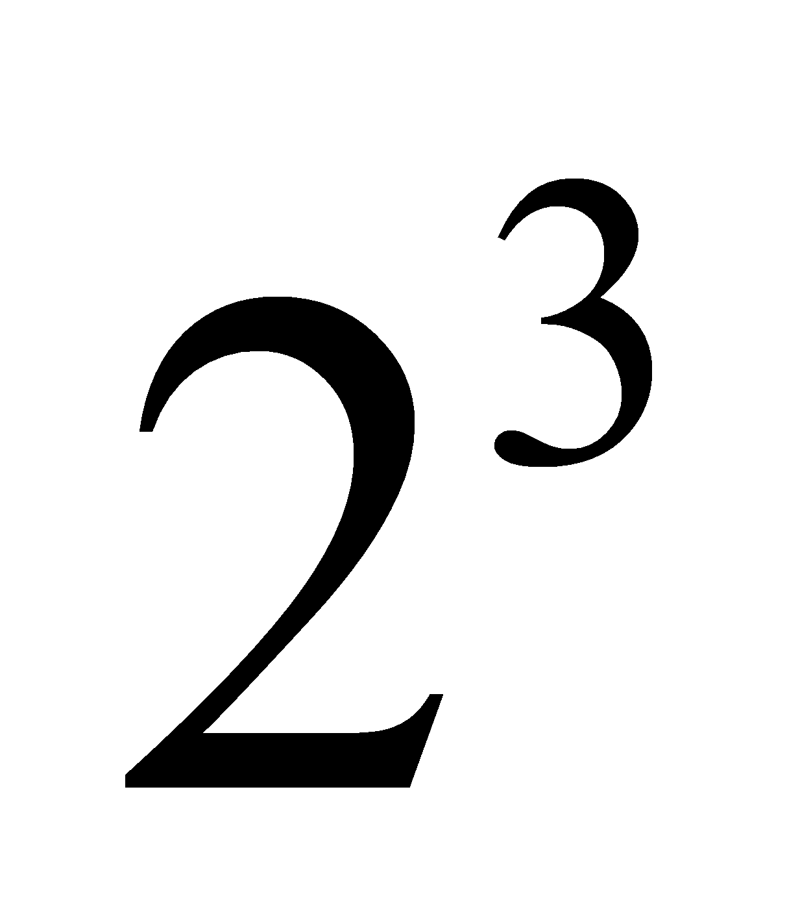
、 和
和 分别可以分裂成2个、3个和4个连续奇数的和，即
分别可以分裂成2个、3个和4个连续奇数的和，即 ，
， ，
，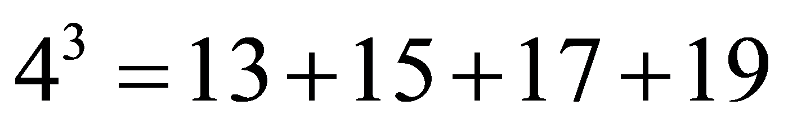
，…若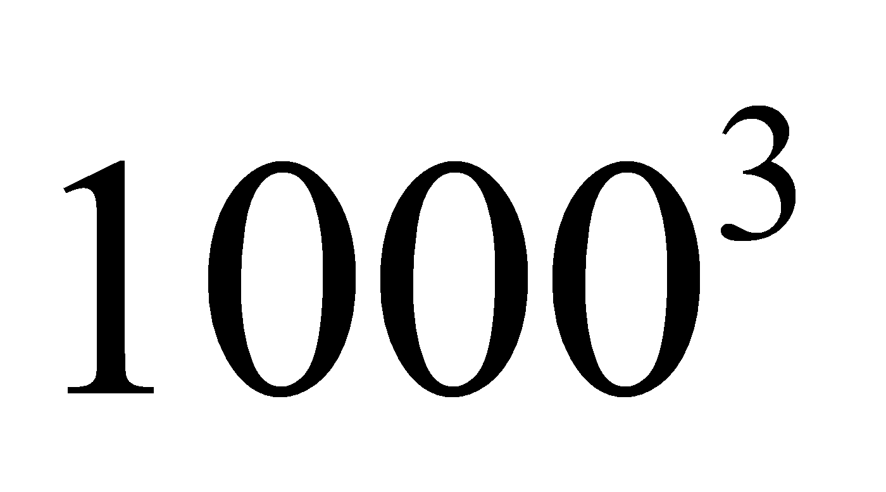
也按照此规律来进行分裂，则分裂出的奇数中，最小的奇数是 ．8．（2024·四川成都·模拟预测）观察按一定规律排列的一组数：2， ，
， ，…，其中第
，…，其中第 个数记为
个数记为
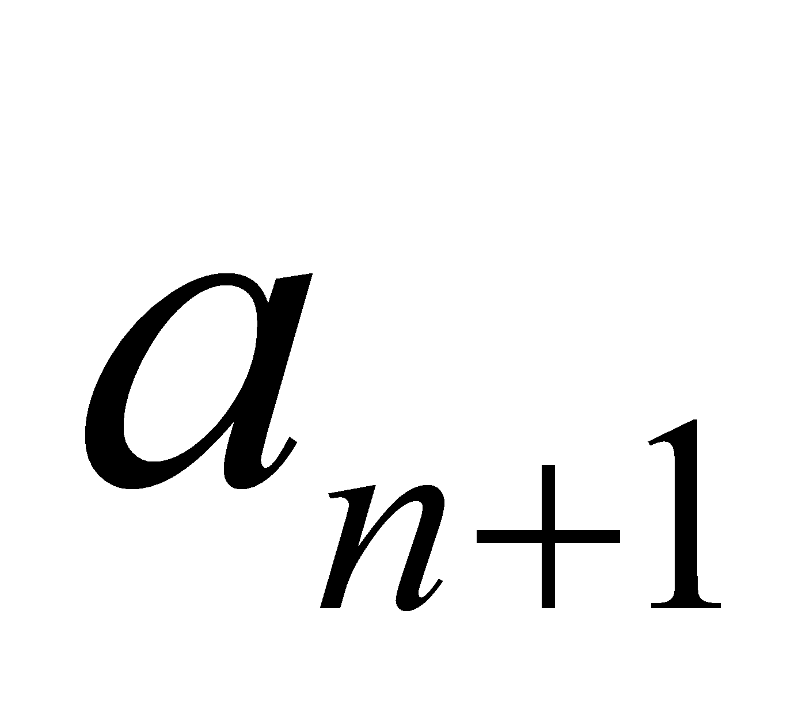
，第 个数记为
个数记为 ，且满足
，且满足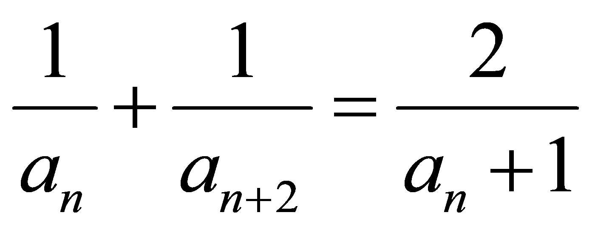
，则 ；
； ．
．三、解答题
9．（23-24七年级上·江西吉安·期中）有一列数，按一定规律排列成 ，…，观察这列数的规律解决如下问题：
，…，观察这列数的规律解决如下问题：
(1)第七个数是______，第n个数可表示为________；
(2)若其中某三个相邻数的积是
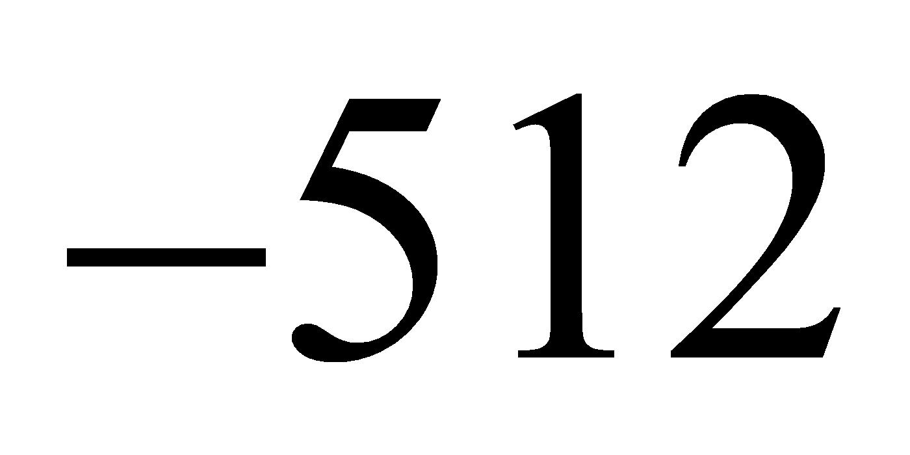
，求这三个数的和．10．（24-25七年级上·河南焦作·开学考试）摆一摆，找规律．
(1)依次摆下去，图形⑤是什么图形？画出来．
(2)摆图形⑥需要用多少根小棒？
11．（23-24六年级下·黑龙江哈尔滨·期末）观察下面三行数：
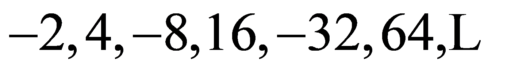
；①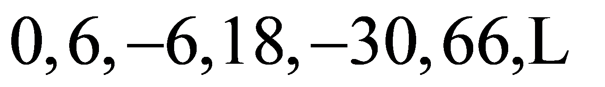
；②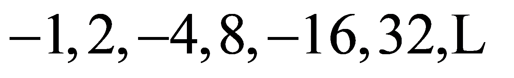
；③(1)第①行数第8个数是________；
(2)取每行数的第10个数，计算这三个数的和．
12．（23-24八年级下·江西吉安·期末）观察下面的变形规律：
解答下面的问题：
(1)若n为正整数，且写成上面式子的形式，请你猜想 _____．
_____．
(2)计算：
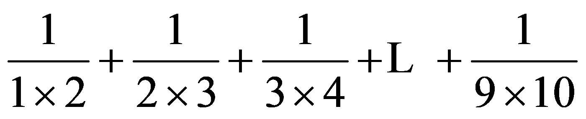
(3)计算：
13．（22-23七年级上·江苏徐州·阶段练习）观察下列图案：
它们是按照一定规律排列的，依照此规律，
(1)第1个图案中共有 ______ 个三角形，第2个图案中共有______个三角形．
(2)第4个图案中共有______个三角形，第5个图案中共有______个三角形．
(3)计算：第120个图案中三角形的个数是多少？
14．（23-24七年级上·安徽合肥·单元测试）如图，每个小正方形的面积均为1．认真研读图形及对应的等式，寻找规律，完成下列问题：
(1)请写出第5个等式；
(2)猜想第n个等式，用含n的等式表示这个等式；
(3)一个用形状大小一样的无数个小正方体搭成的几何体，若从其正面看到的形状图是上面规律图的左图，从其上面看到的形状图是由400个小正方形组成的大正方形，则这个几何体最多共有多少个小正方体？
15．（24-25七年级上·全国·假期作业）将连续的奇数1，3，5，7，，排成如下的数表：十字框框出5个数和（如图所示），问：
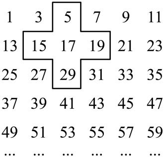
(1)十字框框出5个数的和与框子正中间的数17有什么关系？
(2)若将十字框上下左右平移，可框住另外5个数，这5个数还有这种规律吗？
(3)若设中间的数为 ，用代数式表示十字框框住的5个数字之和；
，用代数式表示十字框框住的5个数字之和；
(4)十字框框住的5个数之和能等于2000吗？能等于2055吗？若能，请分别写出十字框框住的5个数．